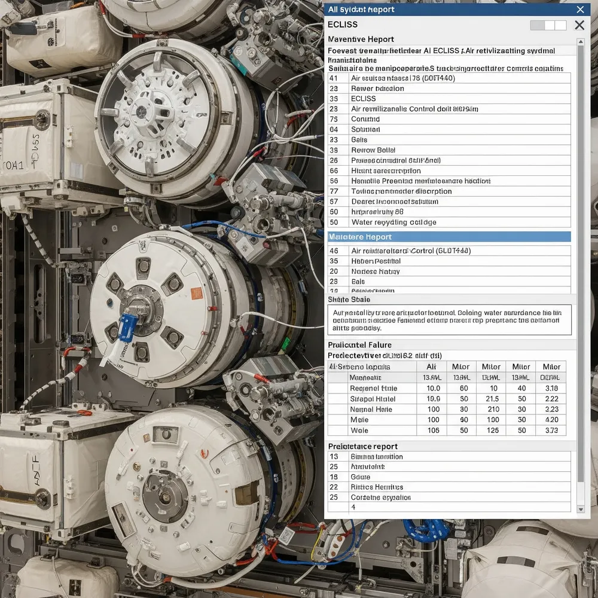

<!DOCTYPE html>
<html lang="en"> </html>
<head>
    <link rel="preconnect" href="https://fonts.googleapis.com">
    <link rel="preconnect" href="https://fonts.gstatic.com" crossorigin>
    <link href="https://fonts.googleapis.com/css2?family=Comfortaa:wght@300..700&family=Nunito:ital,wght@0,200..1000;1,200..1000&display=swap" rel="stylesheet">


    <meta charset="UTF-8">
    <meta name="viewport" content="width=device-width, initial-scale=1.0">
    <title>A.U.R.A. | Home</title>
    <link rel="icon" href="icons/logo_black.png" type="image/logo_black" media="(prefers-color-scheme: light)">
    <link rel="icon" href="icons/logo_gold.png" type="image/logo_gold" media="(prefers-color-scheme: dark)">
    <link rel="stylesheet" href="styles.css">
</head>
    <body>
        <header>
            <div class="topcorner">
                A.U.R.A.
            </div>
            <div class="head">
                <a href="index.html"><button class="topbutton">Home</button></a>
                <a href="contact.html"><button class="topbutton">Contact</button></a>
                <a href="projects.html"><button class="topbutton">Projects</button></a>
            </div>
        </header>
        <h1>About</h1>
        <p>
            <div class="left-half">
            A.U.R.A also known as Automated User Resource Analyzer is a program that takes in data from ECLSS sensors and analyzes it to provide real time analysis and feedback to spacecraft operators. This program is designed to help operators make informed decisions about their spacecraft's operations and ensure the safety and efficiency of their missions.
            </div>
        </p>
        <div class="image-content">
            
        </div>

        <footer>
        © 2025 A.U.R.A. | Designed for Intelligent Space Operations
        </footer>
    </body>
</html>
